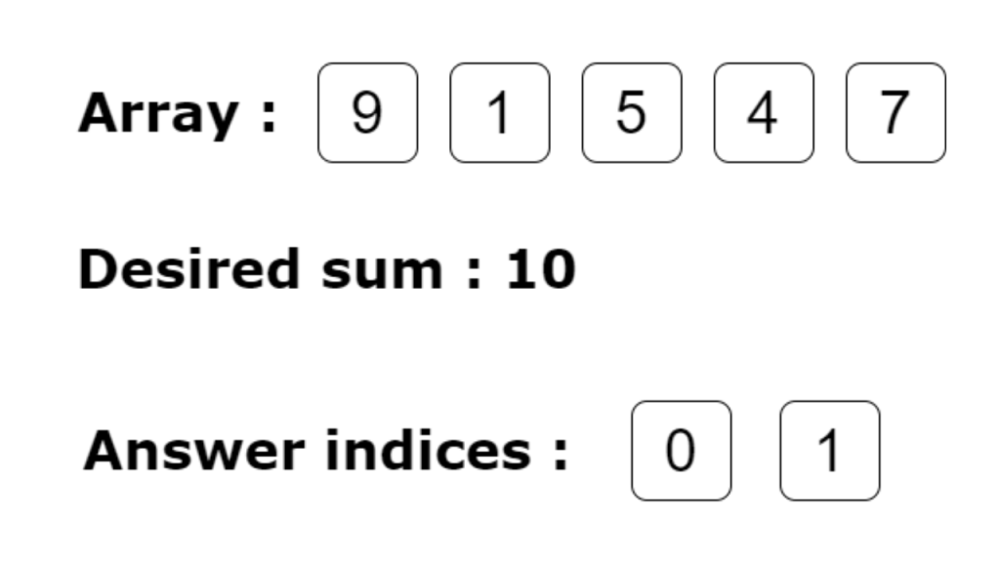

Implementation
package main
import (
"fmt"
)
func main() {
var arrayOne = [...]int{9,1,5,4,7}
var desiredNumber = 10
for i:=0; i < len(arrayOne); i++ {
if (i != (len(arrayOne) - 1)) {
if((arrayOne[i]+arrayOne[i+1]) == desiredNumber ) {
fmt.Printf("Result %d %d",i, i+1)
}
}
}
}Code Explanation
- Input array: [9,1,5,4,7]
- Target sum: 10
- Algorithm traverses array checking adjacent pairs
- Prints indices when sum equals target
Time Complexity
| Operation | Complexity |
|---|---|
| Array Traversal | O(n) |
| Sum Check | O(1) |
| Overall | O(n) |
Usage Examples
// Example inputs:
array := [...]int{9,1,5,4,7} // Array
target := 10 // Desired sum
// Example outputs:
// Result 0 1 // For pair (9,1)
// Result 2 3 // For pair (5,4)Key Points
- Simple linear traversal approach
- Checks adjacent elements only
- Handles positive integers
- Prints index pairs as results